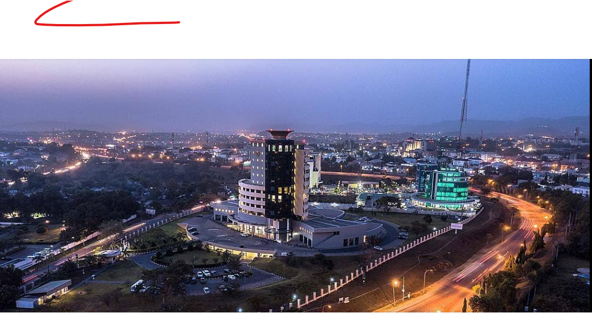

Abuja is the capital city of Nigeria and one of the most beautiful cities in the country. It is known for its well-planned roads, modern buildings, and peaceful environment.
One of the most famous landmarks in Abuja is Aso Rock. The city is also home to important government institutions, beautiful parks, and many cultural attractions.
